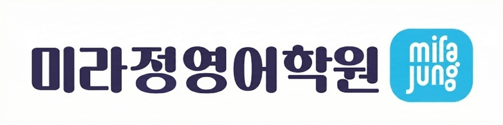

DAY 41
Stage 1
나가기
미라정 영어학원
총 4단계의 코스가 순차적으로 진행됩니다.
📌
STEP 1.
영단어 → 뜻 찾기
📌
STEP 2.
뜻 → 영단어 찾기
📌
STEP 3.
동의어 (Synonym)
📌
STEP 4.
반의어 (Antonym)
DAY 41 (Root: sta)
DAY 42 (Roots: sid, clos, us...)
DAY 43 (Roots: ment, memor...)
DAY 44 (Roots: cogn, sci...)
DAY 45 (Roots: path, pen...)
DAY 46 (Roots: log, lingu...)
DAY 47 (Roots: cit, voc...)
DAY 48 (Roots: scrib, graph...)
DAY 49 (Roots: spec, vis...)
DAY 50 (Roots: popul, civil...)
학습 시작하기
남은 문제: 0
오답: 0
완료!
모든 과정 종료
선택하신 DAY의 학습을 모두 완주하셨습니다.
수고하셨습니다!
처음으로 돌아가기
오답입니다!
다음 문제
단계 완료!
다음 단계로 넘어갑니다.
계속하기